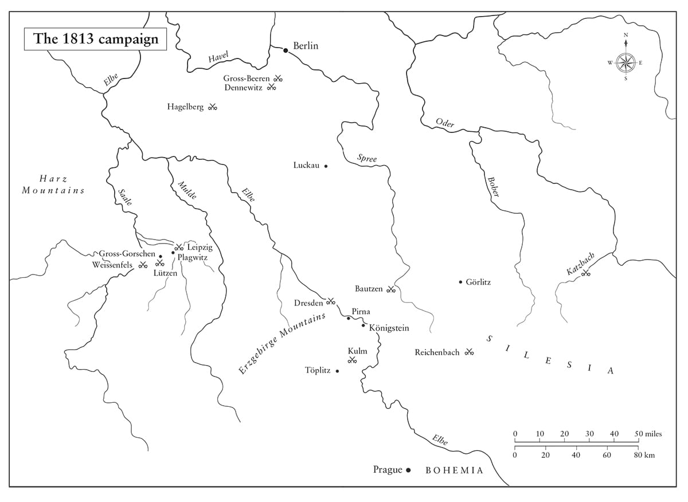

Hậu thế sẽ không bao giờ thấy được tầm cỡ tinh thần của ngài nếu họ không được chứng kiến nó trong nghịch cảnh.
• Molé nói với Napoleon, tháng Ba năm 1813
Ông ấy có thể thông cảm với những rắc rối gia đình; ông ấy dửng dưng với những thảm họa chính trị.
• Metternich nói về Napoleon, tháng Bảy năm 1813
⚝ ✽ ⚝
Khi chứng kiến những gì ông ấy đã tạo dựng được trong 20 ngày sau khi trở lại Paris”, Thống chế Saint-Cyr viết trong hồi ký của mình, “chúng ta phải đồng ý rằng việc ông ấy đột ngột rời khỏi Ba Lan là khôn ngoan”. Napoleon lao vào một cơn cuồng phong của các hoạt động, hiểu rằng sẽ không có nhiều thời gian trước khi Nga liên minh với Phổ, và có thể với cả Hoàng đế Áo Francis bố vợ mình, trước hết để đánh bật Pháp ra khỏi Ba Lan và Đức, rồi sau đó tìm cách lật đổ ông. Theo quan điểm của Bá tước Molé mà không lâu sau được bổ nhiệm làm Bộ trưởng Tư pháp, trong nỗ lực khắc phục thảm họa ở Nga Napoleon đã thể hiện “một hoạt động mãnh liệt có lẽ vượt quá mọi thứ ông ấy đã bộc lộ từ trước tới nay”. Hortense hối hả tìm đến Tuileries, gặp người cha dượng cũ của mình đang rất bận rộn nhưng kiên quyết. “Với tôi, ông ấy có vẻ mệt mỏi, lo lắng, nhưng không hề ngã lòng”, cô viết. “Tôi từng hay thấy ông ấy mất bình tĩnh về những chuyện nhỏ nhặt như một cánh cửa mở ra khi đáng lẽ nó phải được đóng hay ngược lại, hoặc một căn phòng được thắp sáng quá mức hay không đủ sáng. Nhưng vào những thời điểm khó khăn hoặc không may, ông ấy vẫn hoàn toàn làm chủ được tinh thần của mình”. Hortense tìm cách an ủi Napoleon, nói “Chắc là kẻ thù của chúng ta cũng đã phải chịu tổn thất lớn?” Trước câu hỏi này, ông trả lời, “Hẳn rồi, song điều đó không an ủi được ta.
Trong chưa tới 17 tuần kể từ khi về Paris vào giữa tháng Mười hai năm 1812 cho tới khi lên đường đi chiến dịch vào tháng Tư năm sau, Napoleon đã sáp nhập 84.000 bộ binh và 9.000 pháo thủ của Vệ binh Quốc gia vào quân đội chính quy; gọi quân dịch 100.000 người từ nhóm trưng binh của các năm 1809-1812 và 150.000 người từ nhóm trưng binh của các năm 1813 và 1814; thành lập 30 trung đoàn bộ binh mới để hợp thành hơn 10 bán lữ đoàn mới; ra lệnh sản xuất 150.000 súng hỏa mai từ các nhà máy vũ khí; rà soát các trại huấn luyện và doanh trại đồn trú để lấy thêm người; điều chuyển 16.000 lính thủy từ hải quân sang lục quân cũng như các pháo thủ hải quân kỳ cựu sang pháo binh; yêu cầu 12.000 tổng (canton) của Đế chế mỗi tổng cung cấp một người và một ngựa; vét sạch lực lượng quân đội ở Tây Ban Nha để xây dựng lại Cận vệ Đế chế; mua và trưng thu ngựa ở bất cứ đâu có thể; ra lệnh cho các đồng minh xây dựng lại quân đội của họ; thiết lập các quân đoàn cảnh giới trên sông Elbe, sông Rhine và ở Italy. Các tân binh dĩ nhiên được mô tả trên Moniteur như “những người xuất sắc”, nhưng một số là các thiếu niên mới 15 tuổi, và Molé ghi nhận trong một buổi duyệt binh ở Carrousel rằng “tuổi tác còn quá trẻ và thể lực tồi tệ của họ làm dấy lên sự lo ngại sâu sắc từ đám đông xung quanh”. Các tân binh trẻ này được đặt biệt danh là các “Marie Louise”, phần vì Hoàng hậu đã ký lệnh gọi quân dịch họ khi Napoleon vắng mặt, và phần vì bộ dạng trẻ măng ngây ngô của họ. Những người lính kỳ cựu thường nhắc tới các tân kỵ binh là “những chú gà mái cưỡi ngựa con”. Vì các tân binh Pháp không có thời gian cho huấn luyện, nên năng lực vận động khi giao chiến của họ bị hạn chế nhiều; một trong các lý do dẫn tới những cuộc tấn công trực diện thiếu sáng tạo trong hai năm tiếp theo là sự cần thiết phải duy trì cho các đám đông di chuyển cùng nhau.
Nếu chế độ cai trị của đế chế Napoleon thực sự bạo ngược, người ta hẳn đã trông đợi những phần thuộc châu Âu phải chịu đựng nó lâu nhất vùng lên một khi ông đã bị thất bại ê chề, song trên thực tế đó lại không phải là điều đã xảy ra. Những nơi không bị người Pháp chiếm đóng là Đông Phổ và Silesia nổi dậy vào năm 1813, nhưng những phần lãnh thổ Phổ bị chiếm đóng từ năm 1806 như Berlin và Brandenburg thì lại không. Tương tự là Hà Lan, Thụy Sĩ, Italy, và phần lớn lãnh thổ Đức còn lại hoặc không hề nổi dậy chống lại ông, hoặc chờ đợi chính quyền của họ tuyên bố chống lại ông, hoặc im lặng bất động cho tới khi các đạo quân Đồng minh tới. Tại Pháp, trừ những cuộc nổi loạn cướp bánh mì ở Brittany và những lộn xộn nhỏ ở Vendée và Midi, không có cuộc nổi dậy nào diễn ra – vào năm 1813, 1814 hay 1815. Cho dù người Pháp đa số đã quá chán ghét chiến tranh, và có sự chống đối đáng kể việc gọi quân dịch tại các địa phương đặc biệt là trong thời gian thu hoạch mùa màng, nhưng người Pháp không muốn loại bỏ Hoàng đế của họ trong khi ông đang chiến đấu với kẻ thù của Pháp. Chỉ những người công khai chỉ trích Napoleon có nguy cơ bị bắt, và thậm chí cả sự trừng phạt nhẹ tay này cũng được thực hiện theo một phong cách cổ điển Pháp thế kỷ 18. Khi nhân vật bảo hoàng Charles de Rivière “tuyên bố các hy vọng của ông ta có phần hơi quá hằn học và nóng vội”, ông ta đã bị đưa tới nhà tù La Force, nhưng sau đó lại được thả khi một người bạn giành được tự do cho ông ta trong một ván bida đấu với Savary. Một số sĩ quan quân đội giàu tham vọng thậm chí muốn chiến tranh tiếp tục. “Một điều khiến chúng tôi băn khoăn”, Đại úy Blaze thuộc Cận vệ Đế chế viết. “Chúng tôi nói với nhau, nếu Napoleon từ bỏ một sự nghiệp huy hoàng đến thế, nếu không may ông ấy nảy ra ý tưởng lập lại hòa bình, thì coi như vĩnh biệt mọi hy vọng của chúng tôi. May thay, nỗi lo sợ của chúng tôi đã không thành hiện thực, vì ông ấy giao cho chúng tôi còn nhiều nhiệm vụ hơn những gì chúng tôi có thể thực hiện.”
Mặc dù hiếm khi thu hút được nhiều sự chú ý, nhưng các tổn thất của người Nga năm 1812 cũng rất lớn. Khoảng 150,000 quân Nga đã tử trận và 300.000 bị thương hay hoại tử vì giá rét trong tiến trình chiến dịch, và số thường dân còn nhiều hơn thế. Lực lượng quân đội trên chiến trường của Nga cũng tụt xuống chỉ còn 100.000 người kiệt quệ, và phần lớn khu vực từ Ba Lan tới Moscow đã bị tàn phá, làm ngân khố Nga mất đi hàng trăm triệu rúp tiền thuế, dù Alexander vẫn kiên quyết muốn tiêu diệt Napoleon. Vào đầu năm 1813, bốn sư đoàn Nga đã vượt sông Vistula và tấn công Pomerania, buộc người Pháp phải triệt thoái khỏi Lübeck và Stralsund, dù họ có để lại lực lượng đồn trú ở Danzig, Stettin, và các pháo đài Phổ khác. Ngày 7 tháng Một, Thụy Điển, cho tới lúc đó vẫn giữ thế trung lập theo các điều khoản của Hiệp ước Åbo năm 1812, nhưng giờ đây nằm dưới ảnh hưởng của Bernadotte, đã tuyên chiến với Pháp. Bernadotte viết cho Napoleon rằng ông ta không phải đang hành động chống lại Pháp mà là vì Thụy Điển, và rằng việc Napoleon chiếm vùng Pomerania thuộc Thụy Điển là nguyên nhân của sự đổ vỡ – rồi nói thêm, tuy nhiên không thành thật, rằng ông ta luôn dành cho vị chỉ huy cũ của mình những tình cảm của một cựu đồng ngũ. Ngoài xu hướng tự nhiên của ông ta về việc một người Pháp không làm đổ máu người Pháp, Bernadotte thừa nhận làm như vậy sẽ đồng nghĩa với việc ông ta phải vĩnh viễn từ bỏ hy vọng của mình, vốn đã được Alexander nhen nhóm, là trở thành vị vua của Pháp.
•••
“Quân đội của ta đã chịu tổn thất”, Napoleon nói với Thượng viện vào ngày 20 tháng Mười hai, “do sự chuyển mùa khắc nghiệt đến quá sớm”. Sử dụng việc Yorck đào ngũ để kích động sự phẫn nộ ái quốc, ông đưa ra mục tiêu tuyển thêm 150.000 quân và ra lệnh cho các tỉnh trưởng tổ chức các cuộc họp nhằm ủng hộ quá trình gọi quân dịch của ông. “Mọi thứ ở đây đang chuyển động”, ông viết cho Berthier vào ngày 9 tháng Một. Cần phải như thế. Quân đội Nga đã tiến 400 km kể từ ngày Giáng sinh năm 1812 đến ngày 14 tháng Một khi họ tới Marienwerder ở Phổ, bất chấp việc phải chiếm lại Königsberg và những thành trì Pháp khác đang chìm trong mùa đông phương bắc. Eugène không còn lựa chọn nào khác ngoài chuyện rút lui về Berlin.
Napoleon cởi mở một cách đáng ngạc nhiên về thất bại sâu sắc của ông tại Nga. “Ông ấy là người đầu tiên nói về những điều không may và thậm chí còn gợi chúng ra”, Fain viết. Thế nhưng ngay cả khi Hoàng đế sẵn lòng thừa nhận sự không may của mình, ông cũng không luôn làm thế một cách trung thực. “Không có cuộc giao chiến nào trong đó người Nga chiếm được một khẩu pháo hay một con đại bàng; họ không bắt được tù binh nào ngoài những người giao chiến nhỏ lẻ”, ông viết cho Jérôme ngày 18 tháng Một. “Cận vệ của ta không bao giờ giao chiến, không mất lấy một người trong chiến đấu, và vì thế lực lượng này không thể mất bất cứ con đại bàng nào như người Nga tuyên bố”. Cận vệ không mất con đại bàng nào vì họ đã đốt chúng ở Bobr, nhưng lực lượng này đã tổn thất nặng nề trong trận Krasnoi, như Napoleon biết rõ. Còn về việc người Nga không chiếm được khẩu pháo nào, điều mà ông cũng viết cho Vua Đan Mạch Frederick VI, thì Sa hoàng Alexander đã ấp ủ kế hoạch xây dựng một cây cột đồ sộ từ 1.131 khẩu pháo của Pháp bị chiếm trong chiến dịch năm 1812. Ý tưởng này không bao giờ được thực hiện, song ngày nay người ta vẫn có thể trông thấy hàng chục khẩu pháo thời Napoleon tại Kremlin.
Trong một nỗ lực nhằm giảm thiểu sự bất bình trong nước, Napoleon ký kết một Giáo ước mới với Giáo hoàng tại Fontainebleau vào cuối tháng Một. “Có lẽ chúng ta sẽ đạt được mục tiêu ao ước nhất là chấm dứt những khác biệt giữa Nhà nước và Giáo hội”, ông viết vào ngày 29 tháng Mười hai. Điều này có vẻ tham vọng, nhưng trong vòng một tháng, một tài liệu có phạm vi rộng và toàn diện đã được ký kết, bao trùm hầu hết các lĩnh vực bất đồng. “Đức Thánh Cha sẽ thực hiện chức trách Giáo hoàng ở cả Pháp và Italy”, tài liệu mở đầu, “các đại sứ của Tòa Thánh sẽ có cùng các đặc quyền như các nhà ngoại giao… các lãnh địa của Đức Thánh Cha chưa bị tách ra sẽ không phải chịu thuế, những lãnh thổ đã bị tách ra sẽ được bồi thường tới 2 triệu franc thu nhập… Giáo hoàng sẽ giao quyền quản lý giáo hội cho các địa hạt dưới quyền tổng giám mục của Hoàng đế trong vòng sáu tháng” – nghĩa là ông này sẽ thừa nhận việc Napoleon bổ nhiệm các tổng giám mục. Napoleon cũng được phép bổ nhiệm 10 giám mục mới. Đây là một kết quả tốt cho Napoleon, nhưng lại là điều khiến Giáo hoàng lập tức hối hận và tìm cách chối bỏ. “Ông có thể tin nổi”, Napoleon nói với Thống chế Kellermann, “rằng Giáo hoàng, sau khi đã ký vào bản Giáo ước này một cách tự nguyện theo sự ưng thuận của chính ông ấy, tám ngày sau đã viết cho ta… và thẳng thừng yêu cầu ta coi tất cả những điều đó là vô nghĩa và vô giá trị? Ta đã trả lời rằng vì ông ấy không thể sai lầm nên ông ấy đã không thể sai lầm, và rằng lương tâm của ông ấy đã bị đánh động quá nhanh.”
Ngày 7 tháng Hai, Napoleon tổ chức một cuộc diễu binh lớn tại Tuileries và sau đó chủ tọa một cuộc họp Hội đồng Đế chế để thiết lập một chế độ nhiếp chính trong những lúc ông vắng mặt đi chiến dịch. Vụ âm mưu của Malet đã khiến ông dè chừng và muốn tự bảo vệ trước bất cứ âm mưu mới nào lợi dụng sự vắng mặt của mình. Ông cũng muốn đảm bảo rằng trong trường hợp mình chết, con trai ông sẽ được thừa nhận là người kế vị ông kể cả khi còn thơ ấu. (Ông đã đi một quãng đường dài kể từ thời trẻ từng phẫn nộ chống lại nền quân chủ.) Theo 19 điều của sắc lệnh do Cambacérès soạn thảo, trong trường hợp Napoleon chết, quyền lực sẽ thuộc về Marie Louise, với sự tư vấn của một Hội đồng Nhiếp chính cho tới khi Vua La Mã trưởng thành. Napoleon muốn Cambacérès là người nắm thực quyền trị vì Pháp, nhưng cùng với Marie Louise để “đem đến cho Chính phủ quyền lực từ cái tên mình”. Cuộc họp để thiết lập chế độ nhiếp chính có sự tham gia của Cambacérès, Regnier, Gaudin, Maret, Molé, Lacépède, d’Angely, Moncey, Ney, Bộ trưởng Nội vụ-Bá tước de Montalivet, và Talleyrand, người một lần nữa lại được tha thứ. Theo lời Molé, Napoleon “dù bề ngoài có vẻ bình thản và tự tin về chiến dịch ông ấy sắp mở ra, đã nhắc tới sự thăng trầm của chiến tranh và sự thay đổi của vận may bằng những lời lẽ ngược lại với thái độ điềm tĩnh của mình”. Ra lệnh cho Cambacérès chỉ “cho Hoàng hậu xem những gì cô ấy nên biết”, Napoleon yêu cầu ông ta không chuyển cho cô các báo cáo hằng ngày của cảnh sát vì “Thật vô nghĩa khi nói với cô ấy những điều làm cô ấy lo lắng hoặc làm vấy bẩn tâm trí.”
Đến ngày 13 tháng Hai, Napoleon nhận được tin rất xấu rằng Áo đang huy động một đạo quân tác chiến gồm ít nhất 100.000 người. Không lâu sau đó, Metternich đề nghị “làm trung gian” cho một giải pháp hòa bình ở châu Âu – không phải động thái đáng trông đợi từ một đồng minh. Cuộc trò chuyện lâu với Molé trong phòng bida ở Tuileries sau bữa tối hôm đó đã bộc lộ suy nghĩ của Napoleon về một số vấn đề. Ông nói rất trân trọng về Marie Louise, nói rằng ông nhìn thấy ở cô nét gì đó của tổ tiên cô, Anne d’Autriche. “Cô ấy biết rất rõ những ai đã biểu quyết xử tử Louis XVI, và cũng biết về xuất thân và lai lịch của mọi người”, ông nói, song cô không bao giờ tỏ thái độ thiên vị với những người quý tộc cũ hay chống lại những người đã xử tử nhà vua. Sau đó, ông nói tới những người Jacobin “có số lượng đáng kể ở Paris và đặc biệt đáng gờm”, nhưng “Chừng nào ta còn sống thì đám khốn đó sẽ không nhúc nhích, vì chúng đã biết tất cả về ta từ ngày 13 tháng Hái nho và biết ta sẵn sàng nhắm vào chúng nếu ta gặp bất cứ rắc rối nào”. Ông biết các kẻ thù trong nước và ngoài nước của mình sẽ “liều lĩnh hơn nhiều kể từ sau tai họa ở Nga. Ta phải có thêm một chiến dịch nữa và đánh bại đám người Nga đáng ghét đó: chúng ta phải đẩy lùi chúng trở lại biên giới của chúng và làm chúng từ bỏ ý định vượt qua biên giới đó một lần nữa”. Rồi ông chuyển sang phàn nàn về các thống chế của mình: “Không có người nào có thể chỉ huy những người khác và không ai trong số họ biết gì hơn ngoài việc tuân lệnh ta như thế nào.”
Napoleon nói với Molé ông từng hy vọng vào Eugène, bất chấp thực tế là anh ta “chỉ là một kẻ kém cỏi”. Ông phàn nàn rằng Murat đã khóc “rơi cả nước mắt lên giấy” khi ông ta viết thư cho các con mình và nói rằng ông ta đã phải chịu đựng “sự chán nản” trong cuộc rút lui khỏi Moscow, trong khi:
⚝ ✽ ⚝
Có thể một sự kiểm soát cảm xúc bản thân cứng nhắc như thế sẽ có vẻ đáng ghê tởm với quan điểm hiện đại, song vào thời đó nó được coi như một phẩm chất cổ điển. Không nghi ngờ là nó đã giúp Napoleon vượt qua những bước không may bất thường của mình.
Khả năng kiểm soát bản thân này thể hiện rõ khi ông phát biểu trong phiên khai mạc Cơ quan Lập pháp và Thượng viện ngày 14 tháng Hai. Một người tham dự nhớ lại là ông bước lên các bậc cấp để tới ngai trong sự hoan hô của các đại biểu, “cho dù khuôn mặt họ bộc lộ nhiều lo âu hơn khuôn mặt của ông”. Trong bài phát biểu dài đầu tiên trước các đại biểu kể từ khi ông trở về từ nơi mà ông gọi là “sa mạc” Nga, ông giải thích sự thất bại bằng cách nói, “Sự khắc nghiệt quá mức và quá sớm của mùa đông đã khiến quân ta phải chịu một tai họa ghê gớm”. Sau đó, ông thông báo về sự chấm dứt “những khó khăn” của ông với Giáo hoàng, nói rằng triều đại Bonaparte sẽ mãi mãi cai trị ở Tây Ban Nha và tuyên bố Đế chế Pháp có cán cân thương mại dương 126 triệu franc, “cho dù biển bị phong tỏa”. (Ba ngày sau, Montalivet công bố những con số thống kê hậu thuẫn cho mọi điều Hoàng đế đã tuyên bố, như các chế độ độc tài vẫn hay thực hiện.) “Kể từ sự đổ vỡ sau Hiệp ước Amiens, ta đã đề xuất hòa bình [với Anh] bốn lần”, ông nói, lần này một cách trung thực, sau đó ông nói thêm: “Ta sẽ không bao giờ lập lại nền hòa bình nào trừ nền hòa bình danh dự và phù hợp với sự vĩ đại của đế chế ta”. Cụm từ “Albion nham hiểm” đã thỉnh thoảng được dùng kể từ thời Thập tự chinh (và đã xuất hiện trong một bài “Thơ ngợi ca Cái chết của Lannes”) song phải đến năm 1813, theo lệnh của Napoleon, nó mới được sử dụng rộng rãi.
Chiến dịch năm 1812 là một thảm họa cho nền tài chính Pháp. Cho tới năm 1811, đồng franc đã duy trì được giá trị của nó so với đồng bảng Anh, và trên thực tế đã hơi tăng giá so với đồng tiền này. Ngân sách năm 1810 đã chứng kiến một khoản thặng dư nhỏ 9,3 triệu franc, và lãi suất trái phiếu ở mức có thể điều phối được 6%. Nhưng sau bản thông cáo trứ danh số 29, các trái phiếu – phản ánh sự thiếu niềm tin vào tương lai của Napoleon – đã nhảy vọt từ 6% lên 10%, và khoản thâm hụt ngân sách 37,5 triệu franc của năm 1812 chỉ có thể được bù đắp nhờ các loại thuế mới và những đợt bán tài sản nhà nước mới, thu về một khoản nhỏ hơn so với những lần bán trước vì quyền sở hữu những tài sản này đã trở nên kém đảm bảo. Khi việc bán công khai đất do nhà nước sở hữu trị giá 370 triệu franc nhưng chỉ được 50 triệu franc, thuế bán hàng đã phải tăng lên 11,5% và thuế đất lên 22,6%. Trong khi đó, Napoleon thực hiện tiết kiệm một số chi tiêu cá nhân, nói với người quản lý đội phục vụ của mình rằng ông muốn “ít đầu bếp, ít món, ít đĩa hơn, v.v. Trên chiến trường, tại bàn ăn, kể cả của ta, sẽ được phục vụ súp, một món luộc, một món nướng, rau củ, không bánh pudding”. Các sĩ quan không còn có thể lựa chọn giữa rượu vang và bia, mà sẽ uống bất cứ thứ gì họ được phục vụ. Về một đề xuất của Bộ Nội vụ muốn chi số tiền bằng 10% lương của một tỉnh trưởng cho tang lễ của ông ta nếu ông ta qua đời khi tại chức, Napoleon phê nguệch ngoạc: “Từ chối. Tại sao lại tìm cơ hội để chi tiêu nhiều hơn?” Đạo quân Catalonia không còn được cung cấp rượu vang, rượu mạnh, yến mạch, và thịt muối khi chúng có sẵn dồi dào tại chỗ. “Tất cả những giao dịch mà Tướng Dumas thực hiện là điên rồ”, Napoleon viết về kế hoạch của Tổng trưởng hậu cần đối với việc cung cấp lương thực cho các pháo đài trên sông Oder. “Ông ta có vẻ tin rằng tiền chẳng hơn gì bùn”. Mọi dự án xây dựng công đã bị đình chỉ trước chiến dịch Nga, và không bao giờ được tiếp tục. Vào các năm 1813 và 1814, khi không có dấu hiệu nào cho thấy việc tổng động viên và chi tiêu quân sự ở mức cao sắp kết thúc, các mức thâm hụt còn lớn hơn nữa.
•••
Cho dù vào đầu tháng Một năm 1813, Frederick William III đề xuất đưa Tướng Yorck ra tòa án binh vì đã ký kết hiệp ước không tấn công lẫn nhau với người Nga tại Tauroggen, nhưng thực ra ông ta chỉ đang chờ thời cơ. Phổ đã trải qua một cuộc cách mạng hiện đại hóa kể từ Tilsit, có nghĩa là giờ đây Napoleon phải đối mặt với một kẻ thù rất khác so với kẻ thù ông đã nghiền nát tại Jena gần bảy năm trước. Đất nước này đã cải cách, với thất bại là động lực và mô hình quản lý hành chính-quân sự của Napoleon là hình mẫu. Các Nam tước von Stein và von Hardenberg cùng các Tướng von Gneisenau và von Scharnhorst yêu cầu một “cuộc cách mạng theo nghĩa tích cực”, mà trong đó bằng việc phá bỏ “những định kiến lỗi thời” sẽ làm hồi sinh “những sức mạnh đang ngủ say” của Phổ. Đã có những cải cách lớn về tài chính và hành chính, trong đó có việc bãi bỏ nhiều loại thuế nội địa, những độc quyền và lề thói có tính hạn chế, sự trói buộc cha truyền con nối áp đặt lên nông dân và những hạn chế về nghề nghiệp, về đi lại và sở hữu đất đai. Một thị trường lao động tự do được thiết lập, thuế má được điều chỉnh, các bộ trưởng được trực tiếp chịu trách nhiệm, những hạn chế về tài sản, hôn nhân và đi lại ở người Do Thái được gỡ bỏ.
Về mặt quân sự, Phổ thanh lọc Bộ Tư lệnh tối cao (trong 183 tướng tại vị năm 1806 chỉ còn lại 8 vào năm 1812), mở rộng cơ hội gia nhập hàng ngũ sĩ quan cho những người không phải quý tộc, áp dụng hệ thống thi cử cạnh tranh trong các trường đào tạo sĩ quan, bãi bỏ hình phạt roi, và huy động nam giới trưởng thành của nước này vào Landwehr (dân binh) và Landsturm (dự bị). Đến năm 1813, Phổ đã đưa trên 10% tổng dân số của mình vào đội ngũ mặc quân phục, một tỉ lệ cao hơn bất cứ cường quốc nào, và sắp tới trong hai năm chiến đấu gần như liên tục, nước này có ít quân đào ngũ nhất. Với một Bộ Tư lệnh được cải thiện rất nhiều, Phổ có thể tự hào về những chỉ huy xuất sắc trong các chiến dịch sắp tới, như các Tướng von Bülow, von Blücher, von Tauentzien, và von Boyen. Napoleon buộc phải thừa nhận rằng người Phổ đã tiến bộ rất nhiều kể từ các chiến dịch trước; như ông đã nói về điều này khá bỗ bã: “Lũ súc vật này đã học được điều gì đó”. Việc họ đã học phần lớn những điều đó từ chính ông khó có thể coi là một điều an ủi, cũng như cuộc cải cách quân sự của Đại Công tước Charles sau trận Austerlitz đã sao chép nhiều quy tắc của Napoleon, và một số cải cách của Barclay de Tolly tại Nga sau trận Friedland cũng có tiếng vang tương tự. Việc tất cả các quân đội ở châu Âu đến năm 1812 đều áp dụng triệt để hệ thống quân đoàn giúp các đạo quân Đồng minh linh hoạt hơn trong vận động, vừa là một sự khâm phục với người Pháp, nhưng cũng vừa là một mối đe dọa với họ.
Ngày 28 tháng Hai năm 1813, Frederick William ký Hiệp ước Kalisch với Alexander, theo đó Sa hoàng cam kết khôi phục Phổ về lại đường biên giới của nước này trước Tilsit và cung cấp 150.000 quân nếu Phổ cử 80.000 quân đánh Napoleon. Ngay sau khi Hiệp ước được ký kết, người Anh bắt đầu vận chuyển vũ khí, trang bị và quân phục tới các cảng ở Baltic cho quân đội cả hai nước này sử dụng. Eugène buộc phải rút khỏi Berlin trong khi để lại sau các lực lượng đồn trú tại Magdeburg, Torgau, và Wittenberg. Vì đã tiến hành bao vây người Pháp ở Stettin, Küstrin, Spandau, Glogau, Thorn, và Danzig, lực lượng trên chiến trường của Nga giảm xuống còn 46.000 bộ binh và 10.000 lính Cossack, cho dù họ sắp có 61.000 lính Phổ đến hội quân. Kế hoạch của Đồng minh là tiến tới Dresden để cắt đứt Saxony khỏi Napoleon, trong khi phái các đơn vị Cossack tràn qua vùng đồng bằng phía bắc Đức, tìm cách kích động sự nổi dậy ở các thành phố thuộc Liên minh Hansa và Liên bang sông Rhine.
Trước bất cứ sự sỉ nhục nào dù nhỏ nhất từ một thành phố hay ngôi làng Phổ, hãy đốt trụi nó”, Napoleon chỉ đạo Eugène vào ngày 3 tháng Ba, “kể cả Berlin”. May thay, việc đốt trụi thủ đô Phổ không còn khả thi nữa, vì quân Nga đã tiến vào thành phố này cùng ngày. “Không có gì ít tính quân sự hơn cách hành xử anh đang theo đuổi”, Napoleon nổi xung với Eugène khi biết tin. “Một viên tướng có kinh nghiệm hẳn đã thiết lập doanh trại phía trước Küstrin”. Ông còn phàn nàn thêm rằng không nhận được báo cáo hàng ngày từ Tham mưu trưởng của Eugène, “Ta chỉ biết được những gì đã xảy ra từ báo Anh”. Ông thậm chí còn tức giận hơn với Jérôme, người phàn nàn về những khoản thuế cao mà người dân Westphalia phải nộp để nuôi các pháo đài như Magdeburg. “Những biện pháp này là được phép với một quốc gia đang có chiến tranh; chúng đã liên tục được sử dụng kể từ khi có thế giới này”, Napoleon nổi xung trong một câu trả lời nghiêm khắc mang tính đặc trưng. “Cậu sẽ thấy 300.000 người mà ta có ở Tây Ban Nha tiêu tốn hết bao nhiêu, tất cả số quân mà ta đã tuyển mộ năm nay, và 100.000 kỵ binh mà ta đang có… Cậu luôn lý sự… Mọi lập luận của cậu đều vớ vẩn… Trí thông minh của cậu dùng để làm gì khi cậu có cách nhìn nhận sai lầm như thế? Tại sao lại làm hài lòng cho sự phù phiếm của cậu bằng cách làm phật ý những người bảo vệ cậu?” Trước khi phái đi một lực lượng để phòng thủ Magdeburg ngày 4 tháng Ba, Napoleon cùng viên chỉ huy duyệt qua một bảng kiểm quen thuộc: “Hãy đảm bảo hoàn toàn chắc chắn rằng mỗi người lính có một đôi giày dưới chân và hai đôi trong ba lô; rằng việc trả lương cho họ là đúng hạn, còn nếu không hãy trả những khoản nợ. Hãy đảm bảo rằng mỗi người lính có 40 viên đạn trong túi đạn của họ.
Viết cho Montalivet, Napoleon nói ông sắp tới Bremen, Münster, Osnabrück, và Hamburg, nhưng trong tinh thần tiết kiệm mới của mình, chỗ nghỉ cho ông và các đội quân danh dự tại những thành phố đó “không được gây phí tổn nào cho đất nước”. Tuy nhiên, đó là một mẹo để đánh lừa kẻ thù về việc di chuyển của ông. Thật tốt khi ông đã không tới Hamburg, vì vào ngày 18 tháng Ba lính Cossack đã tới và làm bùng lên cuộc nổi dậy ở khu vực Liên minh Hansa đúng như các nước Đồng minh hy vọng. Mecklenburg là quốc gia đầu tiên rời khỏi Liên bang sông Rhine. Đến cuối tháng Ba, tình hình xấu đi tới mức Napoleon nói với Lauriston, giờ đây là Tư lệnh Quân đoàn Cảnh giới trên sông Elbe, rằng ông không còn dám viết thư cho Eugène về kế hoạch bảo vệ Magdeburg và Spandau của mình, vì de Beauharnais không có chìa khóa mật mã và “lính Cossack có thể đoạt mất thư của ta”. Để làm cho tình hình xấu thêm, khi đó Thụy Điển lại đồng ý góp 30.000 quân vào Liên minh Thứ sáu nếu Anh trợ cấp cho nước này 1 triệu bảng, và đến đầu tháng Tư đơn vị đồn trú ít ỏi của Tướng Pierre Durutte buộc phải triệt thoái khỏi Dresden.
Vào chính thời điểm này, Napoleon nói với Molé về triển vọng Pháp trở lại với đường biên giới “cũ” của mình trước chiến tranh năm 1791. “Ta có được tất cả với vinh quang của ta”, ông nói.
⚝ ✽ ⚝
Ông so sánh tai họa ở Nga với một cơn bão khiến cái cây bị lay động tới tận gốc rễ nhưng lại “khiến nó càng bám chặt hơn vào đất, nơi cơn bão đã không thể nhổ bật nó lên”. Gác sang một bên so sánh không mấy đáng tin cậy về cây cối, ông muốn bàn về dân tộc Pháp: “Họ sợ ta hơn thích ta, và thoạt đầu hẳn sẽ đón nhận tin ta chết như một sự giải thoát. Nhưng, tin ta đi, sẽ tốt hơn nhiều nếu như họ thích ta mà không sợ ta”. (Sự đối lập giữa được thích và bị sợ tất nhiên mang âm hưởng từ tác phẩm Quân vương của Machiavelli, một cuốn sách rất quen thuộc với ông.) Napoleon tiếp tục nói rằng ông sẽ đánh bại người Nga vì “họ không có bộ binh” và biên giới của Đế chế sẽ được ấn định trên sông Oder vì “Sự phản bội của Phổ sẽ cho phép ta tìm kiếm sự đền bù”. Ông cũng nghĩ Áo sẽ không tuyên chiến, vì “Hành động tuyệt nhất trong cả sự nghiệp chính trị của ta là cuộc hôn nhân của ta”. Ít nhất trong ba điểm cuối cùng kể trên, rõ ràng ông đang cố động viên tinh thần của Molé mà không có chút cân nhắc thực sự nào tới tình hình thực tế.
Một minh chứng cho khả năng hồi phục và năng lực của Napoleon – cũng như cho sự tự tin ông vẫn có – là việc sau khi trở về từ Nga chỉ với 10.000 binh lính còn khả năng tác chiến trong lực lượng tấn công chủ lực của mình, ông đã có thể trong vòng bốn tháng tung ra chiến trường một đạo quân gồm 151.000 người cho chiến dịch Elbe, và sẽ còn thêm nhiều lực lượng nữa được tổ chức. Ông rời Saint-Cloud lúc 4 giờ sáng ngày 15 tháng Tư để ra chiến trường, với đồng minh là các vị vua của Đan Mạch, Württemberg, Bavaria, Saxony, các đại công tước của Baden và Würzburg, cho dù một số người trong đó là những đồng minh miễn cưỡng. “Hãy viết cho Papa François(*) của em mỗi tuần một lần”, ông viết cho Marie Louise ba ngày sau đó, “hãy gửi tới ông ấy những thông tin về quân sự và chuyển tới ông ấy tình cảm mà ta dành cho cá nhân ông ấy”. Với Wellington đang tấn công tại Tây Ban Nha, Murat đang thương lượng với Áo về Naples, Bernadotte sắp đổ bộ lên lục địa với một đạo quân Thụy Điển, nỗi lo ngại về nổi dậy ở miền Tây Đức, cùng một Áo đang tái vũ trang nhanh chóng và khả quan nhất cũng chỉ đề xuất làm “trung gian”, Napoleon biết ông cần một thắng lợi sớm mang tính quyết định trên chiến trường. “Ta sẽ tới Mainz”, ông đã viết cho Jérôme vào tháng Ba, “và nếu người Nga tiến quân, theo đó ta sẽ vạch kế hoạch; nhưng chúng ta rất cần chiến thắng trước tháng Năm”. Đồng minh hội quân lại quanh Leipzig – do Wittgenstein chỉ huy sau khi Kutuzov qua đời vì bị bệnh vào tháng Tư – đã tập trung 100.000 quân; trong đó có 30.000 kỵ binh được trang bị ngựa tốt, và họ đang được tăng viện mạnh. Ngược lại, do kết quả của việc ngựa chết hàng loạt ở quy mô lớn tại Nga năm trước, Đại quân mới được nhanh chóng xây dựng lại chỉ có 8.540 kỵ binh.
Napoleon tới Erfurt ngày 25 tháng Tư và nắm lại quyền chỉ huy quân đội. Ông bị sốc khi phát hiện ra một số sĩ quan rất thiếu kinh nghiệm. Lấy ra các đại úy từ các Trung đoàn bộ binh 123 và 134 để chỉ định làm tiểu đoàn trưởng của Trung đoàn khinh binh 37, ông phàn nàn với Bộ trưởng Chiến tranh là Tướng Henri Clarke: “Thật lố bịch khi có những đại úy chưa bao giờ tham gia một cuộc chiến… Ông đã tuyển những thanh niên mới vừa rời nhà trường, những người thậm chí còn chưa từng qua Saint-Cyr [Học viện Quân sự], kết quả là họ chẳng biết gì cả, và ông nhét họ vào những trung đoàn mới!” Thế nhưng đây lại là nguồn nhân lực Clarke phải sử dụng sau khi mất đi hơn nửa triệu lính ở Nga.
Chỉ ba ngày sau khi tới nơi, Napoleon đã dẫn Đại quân gồm 121.000 người vượt trở lại sông Elbe vào lãnh thổ Saxony. Mục tiêu của ông là chiếm lại miền Bắc Đức và giải thoát cho Danzig cũng như các thành phố bị vây hãm khác, để giải phóng cho 50.000 lính kỳ cựu, và hy vọng trở lại chiến tuyến trên sông Vistula. Áp dụng đội hình vuông, ông nhằm vào đạo quân địch tại Leipzig với quân đoàn của Lauriston đi tiên phong, tiếp theo là các quân đoàn của Macdonald và Reynier bên cánh trái, các quân đoàn của Ney và Tướng Henri Bertrand bên cánh phải, còn quân đoàn của Marmont làm hậu quân. Ở phía trái ông, Eugène có thêm 58.000 quân nữa. Poniatowski trở lại quân đội vào tháng Năm, nhưng Napoleon đã phái Davout đi làm Thống đốc Hamburg, một điều nguy hiểm vì không tận dụng hết năng lực của vị thống chế xuất sắc nhất này.
•••
Ngày 1 tháng Năm, trong lúc đi trinh sát các vị trí địch, Bessières bị tử thương khi một quả đạn pháo va vào một bức tường nảy ra đập trúng ngực ông ta. “Cái chết của con người cao quý này đã tác động nhiều đến ông ấy”, Bausset ghi lại. Bessières đã phục vụ tại mọi chiến dịch trong sự nghiệp của Napoleon kể từ năm 1796. “Niềm tin của ta dành cho ông”, Napoleon từng có lần viết cho ông ta, “cũng lớn như sự trân trọng của ta dành cho tài năng quân sự, lòng dũng cảm, tình yêu trật tự và kỷ luật của ông”. (Để trấn an cô, ông yêu cầu Cambacérès “Hãy làm Hoàng hậu hiểu rằng Công tước d’Istrie [Bessières] đang ở cách xa ta khi ông ấy tử trận”.) Lúc này, ông viết cho người vợ góa của Bessières: “Mất mát của bà và các con bà rõ ràng là lớn lao, song mất mát của ta thậm chí còn lớn lao hơn. Công tước d’Istrie ngã xuống trong cái chết đẹp đẽ nhất và không hề đau đớn. Ông ấy để lại đằng sau một danh tiếng không chút tì vết: đây là di sản đẹp đẽ nhất ông ấy có thể trao lại cho các con mình”. Bà góa có thể tranh cãi với ông một cách hoàn toàn có lý về chuyện mất mát của ai lớn lao hơn, song dẫu sao lá thư của ông cũng cảm động, và đi kèm một khoản trợ cấp hào phóng.

Napoleon giờ đây đối mặt với một lực lượng gồm tổng cộng 96.000 quân. Vào Chủ nhật, ngày 2 tháng Năm, khi ông đang quan sát cuộc tiến quân của Lauriston, ông biết tin Wittgenstein đã tung ra một cuộc tấn công bất ngờ vào Ney gần làng Lützen lúc 10 giờ sáng hôm đó. Chăm chú lắng nghe tiếng đại bác, ông lệnh cho Ney giữ vững vị trí của mình trong khi ông xoay đạo quân vòng lại, điều Bertrand tấn công cánh trái và Macdonald tấn công cánh phải quân địch trong một cuộc điều động quân đoàn kinh điển, còn Lauriston trở thành lực lượng dự bị mới. “Chúng ta không có kỵ binh”, Napoleon nói; “chẳng sao cả. Sẽ là một trận đánh như ở Ai Cập; ở khắp nơi bộ binh Pháp sẽ phải gánh vác tất cả, và ta không sợ phải trao số mệnh mình cho giá trị nội tại của những lính quân dịch trẻ”. Đa số lính quân dịch này lần đầu tiên nhận được súng hỏa mai khi họ tới Erfurt chỉ bốn ngày trước trận đánh, và một số nhận vào một ngày trước khi diễn ra trận đánh. Dẫu vậy, các “Marie Louise” đã thể hiện tốt tại Lützen.
Vào lúc 2:30 chiều, Napoleon xuất hiện trên chiến trường, dẫn đầu kỵ binh Cận vệ, cưỡi ngựa tiến vào làng Kaja. Ông thiết lập kế hoạch của mình một cách chóng vánh. Ney sẽ tiếp tục giữ trung tâm trong khi Macdonald vào trận bên cánh trái, Marmont che chắn sườn phải của Ney, và Bonnet sẽ tìm cách vòng ra phía sau quân địch từ tuyến đường Weissenfels-Lützen. Bộ binh Cận vệ gồm 14.100 người sẽ tập hợp ngoài tầm quan sát như một lực lượng dự bị, sau đó được triển khai giữa Lützen và Kaja. Thấy một số lính trẻ trong quân đoàn của Ney lùi lại, thậm chí một số ít còn vứt bỏ súng hỏa mai của mình, Napoleon liền tập hợp kỵ binh Cận vệ thành một tuyến ngăn chặn, rồi động viên hô hào cổ vũ họ cho tới khi họ quay lại hàng ngũ. Tuy nhiên, nhìn tổng thể, Ney nói với Napoleon rằng ông ta nghĩ lính quân dịch trẻ chiến đấu tốt hơn lính kỳ cựu của mình, vốn có xu hướng tính toán cân nhắc và ít mạo hiểm hơn. Tờ Moniteur sau đó bình luận: “Những người lính trẻ của chúng ta không sợ hiểm nguy. Trong trận chiến vĩ đại này, họ đã thể hiện sự cao quý tuyệt vời của dòng máu Pháp.”
Bốn ngôi làng Gross-Gorschen, Kaja, Rahna, và Klein-Gorschen hợp thành trung tâm của trận đánh. Sa hoàng – có mặt cùng Frederick William, cho dù Wittgenstein với vai trò Tổng tư lệnh Đồng minh là người đưa ra mọi quyết định quân sự – tung vào lực lượng pháo binh nhẹ cơ động của Nga, và sư đoàn của Ricard bị chặn lại trong khi mỗi ngôi làng đổi chủ vài lần. Ney bị thương trên tiền tuyến, còn tất cả các sĩ quan cao cấp thuộc sư đoàn của Souham đều tử trận hoặc bị thương trừ bản thân Souham. Wittgenstein hết sạch lực lượng dự bị, trong khi có thể thấy quân Pháp tràn tới sau mỗi giờ càng đông, song ông ta đã chọn việc nối lại cuộc tấn công vào Kaja. Đến khoảng 6 giờ chiều, Napoleon xác định rằng thời điểm cho cuộc tấn công cuối cùng đang nhanh chóng tới gần. Drouot đưa lên trước 58 khẩu pháo của pháo binh Cận vệ để hội với Đại pháo đội, nhờ vậy lúc này 198 khẩu pháo có thể pháo kích trung tâm quân địch. Nhớ lại sai lầm của mình ở Borodino khi ông bỏ lỡ cơ hội sử dụng Cận vệ lúc quyết định, Napoleon bèn lệnh cho Mortier dẫn đầu Cận vệ Trẻ – 9.800 người chia thành bốn đội hình hàng dọc – tiến hành tấn công, dưới sự hỗ trợ của sáu tiểu đoàn Cận vệ Già bố trí thành bốn đội hình vuông. Hai sư đoàn kỵ binh Cận vệ, gồm 3.335 người, dàn hàng ngang đằng sau họ, và trong tiếng hô “Hoàng đế muôn năm!” họ hối hả tiến lên từ Rahna tới Gross-Gorschen. Cùng lúc, sư đoàn của Bonnet xung phong từ Starsiedel, và sư đoàn của Morand tiếp tục tấn công từ phía tây.
Với toàn bộ lực lượng dự bị của Đồng minh đã được tung vào hết, Cận vệ Nga tập trung dày đặc phía sau Gross-Gorschen để hỗ trợ các đơn vị Nga và Phổ đang rút lui tập hợp lại. Khi đêm xuống – được chiếu sáng bởi năm ngôi làng đang cháy rực – người Pháp khởi động lại cuộc tấn công, khiến địch bị rối loạn hơn. Sau trận đánh, quân Đồng minh rút lui một cách trật tự sau khi không thể khai thác ưu thế lớn về kỵ binh của mình. Napoleon đã chiến thắng dù với giá đắt: 2.700 lính Pháp đã tử trận và tới 16.900 bị thương. Người Nga và Phổ chịu tổn thất tương tự (dù họ chỉ thừa nhận 11.000 thương vong). Napoleon không có kỵ binh để thực hiện một cuộc truy kích, vấn đề mà rồi sẽ thành một rắc rối lớn trong suốt chiến dịch năm 1813. Tuy nhiên, ông đã bắt đầu giành lại được Saxony và bờ tây sông Elbe. “Những con đại bàng của ta một lần nữa lại chiến thắng”, ông nói với Caulaincourt sau trận đánh, rồi nói thêm đầy ảm đạm, “nhưng ngôi sao của ta đang lặn.”
“Ta rất mệt”, Napoleon viết cho Marie Louise lúc 11 giờ tối hôm đó. “Ta đã giành được một chiến thắng trọn vẹn trước các đạo quân Nga và Phổ dưới quyền Hoàng đế Alexander và Vua Phổ. Ta mất 10.000 người, cả tử trận và bị thương. Binh lính của ta đã giành được vinh quang và chứng tỏ tình yêu của họ theo một cách khiến trái tim ta xúc động. Hôn con trai ta. Sức khỏe ta rất tốt”. Với cha của cô, ông viết rằng Marie Louise “tiếp tục làm ta rất hài lòng. Cô ấy giờ đây là người nắm quyền thay ta và hoàn thành vai trò này khiến ta vô cùng hài lòng; ta không muốn Hoàng thượng không biết về điều này, vì biết nó sẽ khiến trái tim người cha của ngài vui mừng tới mức nào”. Lời kêu gọi của Napoleon nhắm tới lòng tự hào của người cha trong Francis rõ ràng là một nỗ lực để ngăn cản cha vợ ngả về phía các kẻ thù của ông. Ông có thể nỗ lực để đủ sức đối phó với Nga và Phổ, song nếu Áo gia nhập cùng họ, cơ hội chiến thắng của ông sẽ giảm sút nghiêm trọng.
Hỡi binh lính! Ta hài lòng về các bạn; các bạn đã hoàn thành những gì ta trông đợi!” Napoleon nói trong bản tuyên bố sau trận đánh của mình, sau đó ông nhục mạ Alexander với việc nhắc tới những “mưu đồ giết cha” và chế độ nông nô tại Nga: “Chúng ta sẽ xua đuổi những tên Tartar này quay về vùng đất kinh khủng của chúng, nơi chúng đáng ra không bao giờ được rời khỏi. Hãy để chúng lại nơi vùng đất hoang vu giá lạnh của chúng, nơi cư ngụ của chế độ nô lệ, của man rợ, và của thối nát, nơi con người bị hạ thấp xuống ngang hàng với súc vật.
•••
Trong khi lực lượng Đồng minh vượt sông Elbe thành hai cánh lớn – một chủ yếu là quân Phổ, một chủ yếu là quân Nga – người Pháp chỉ có thể bám theo với tốc độ của bộ binh. Người Phổ đương nhiên muốn rút lui về phía bắc để bảo vệ Berlin, trong khi người Nga muốn lui về phía đông để bảo vệ các tuyến đường liên lạc của họ chạy qua Ba Lan. Wittgenstein, vẫn tìm kiếm cơ hội tấn công vào bên sườn quân Pháp và nghi ngờ một cách đúng đắn rằng Napoleon muốn chiếm lại Berlin, đã tập trung đạo quân của mình gần Bautzen, chỉ cách biên giới Áo gần 13 km, từ đó ông ta có thể che chở cho cả Berlin và Dresden.
Napoleon tiến vào Dresden ngày 8 tháng Năm và ở lại đó 10 ngày. Ông tiếp nhận một sư đoàn Cận vệ Trẻ và bốn tiểu đoàn Cận vệ Già, sáp nhập quân Saxony vào một quân đoàn của Đại quân, phái Eugène trở lại Italy để phòng trường hợp Áo xâm lấn, và kiểm soát ba tuyến đường liên lạc riêng rẽ về Pháp. “Ta có lý do để vui mừng với ý định của Áo”, ông viết cho Clarke, “Ta không nghi ngờ những sự phòng bị của nước này; tuy nhiên, ý định của ta là ở vào một vị trí không phải phụ thuộc vào nó”. Đó là một chính sách nhạy bén. Tuy nhiên, ông vẫn giận dữ với đoàn đại biểu thành phố Dresden tới chào mừng mình, nói với họ là ông biết họ đã giúp đỡ Đồng minh trong thời gian lực lượng này chiếm đóng. “Những vòng hoa trang trí vẫn còn treo ở nhà các vị, và đường phố của các vị vẫn rải đầy những bông hoa nát nhừ mà các cô gái của các vị rắc ra trước bàn chân của các vị vua”, ông nói. “Ta vẫn sẵn sàng bỏ qua tất cả những chuyện đó.”
Napoleon sau đó thực hiện một trong những việc đáng kinh ngạc mà ông có thể làm rất thường xuyên. Ông viết cho cựu trùm mật thám Fouché của mình, chỉ thị cho ông ta bí mật tới Dresden nhanh nhất như có thể để quản lý Phổ sau khi nước này đã bị chiếm. “Không ai được phép biết chuyện này ở Paris”, ông bảo ông ta. “Nó phải giống như ông sắp sửa lên đường ra chiến dịch… Chỉ Hoàng hậu-Nhiếp chính được biết việc ông đi. Ta rất vui mừng có cơ hội được triệu tập ông cho những nhiệm vụ mới và có bằng chứng mới về sự gắn bó của ông”. Fouché đã cảm thấy không có chút gắn bó nào với Napoleon kể từ khi ông ta bị đột ngột sa thải sau những cuộc đàm phán hòa bình bí mật của ông ta với Anh, như các biến cố trong năm sau sẽ minh chứng. Tình hình quân sự đồng nghĩa với việc ông ta không bao giờ kiểm soát được Phổ, nhưng cũng như với Talleyrand, Napoleon hoặc đã để mất cảm nhận của mình về việc ai chống đối và ai ủng hộ ông, hoặc đã quá tự tin vào quyền lực của mình tới mức ông không bận tâm. Đội ngũ cố vấn trung thành mà ông có thể trông cậy vào đang thu hẹp.
•••
Tin Áo đang vũ trang và có vẻ ngày càng hiếu chiến hơn khiến Napoleon lo lắng. Ông viết thư liên tục cho Marie Louise để yêu cầu cô tác động với cha mình, chẳng hạn, ông đã viết vào ngày 14 tháng Năm: “Dân chúng đang tìm cách khiến Papa François lầm lẫn. Metternik [nguyên văn] chỉ là một kẻ mưu mô”. Ông viết cho chính Francis ba ngày sau đó, gọi ông ta là “Người anh em và cha vợ thân mến yêu quý”. “Không ai mong muốn hòa bình cháy bỏng hơn ta”, ông mở đầu. “Ta đồng ý bắt đầu các cuộc đàm phán cho một nền hòa bình chung và việc triệu tập một hội nghị”, nhưng “Như tất cả những người Pháp có dòng máu nóng, ta sẽ thà chết với kiếm trong tay hơn là nhượng bộ, nếu có một toan tính nhằm áp đặt các điều kiện với ta”. Cùng lúc, ông nói với Caulaincourt khi phái ông này tới gặp Sa hoàng đề nghị hòa bình: “Ý định của ta là bắc cho ông ta một cây cầu vàng… ông phải cố gắng có được một cuộc đàm phán trực tiếp dựa trên cơ sở này”. Ngay cả tới lúc này, ông vẫn tin mình có thể nối lại quan hệ thân hữu giữa họ. “Một khi chúng ta đã tới nói chuyện với nhau”, ông nói, “chúng ta sẽ luôn kết thúc với việc tìm ra một sự nhất trí”. Nhưng khi Caulaincourt tới bản doanh Đồng minh, Sa hoàng chỉ chấp nhận gặp ông này trong sự có mặt của Vua Phổ cùng các Đại sứ Áo và Anh.
Napoleon rời Dresden lúc 2 giờ chiều 18 tháng Năm để tấn công quân chủ lực Đồng minh tại thành phố pháo đài Bautzen bên sông Spree. Khó có thể đoán được điều này từ lá thư ông viết cho Marie Louise hôm sau: “Thung lũng Montmorency rất đẹp vào mùa này, song ta vẫn nghĩ thời điểm tuyệt nhất ở đây là đầu tháng Sáu khi anh đào chín mọng”. Cùng ngày, ông lệnh cho Eugène ở Italy “Hãy khẩn trương tổ chức sáu trung đoàn của con ngay lập tức. Để bắt đầu, con hãy trang bị cho họ áo khoác, quần dài và ba lô…” Trong một lá thư khác, ông viết tỉ mỉ về việc đứa con gái 6 tuổi của Eugène là Josephine xứ Leuchtenberg, sẽ nhận được lợi tức từ Công quốc Galliera mà Napoleon lập riêng cho cô bé ở vùng Emilia-Romagna của Italy.
Quân đội Đồng minh, khoảng 97.000 người, đã lui về những quả đồi thấp nhìn xuống Bautzen, một vị trí có địa thế tự nhiên dễ phòng thủ được nhanh chóng củng cố bằng các công sự dã chiến. Mọi báo cáo đều cho thấy họ sẽ trụ lại đó, cũng chính xác là điều Napoleon muốn họ làm. Ông có 64.000 quân thuộc các quân đoàn của Bertrand, Marmont, và Macdonald đối mặt trực tiếp với địch, được hỗ trợ bởi quân đoàn của Oudinot và Cận vệ Đế chế, tổng cộng 90.000 người. Đồng minh đã xây dựng 11 cứ điểm kiên cố trên các quả đồi cũng như một số cứ điểm khác trong thành phố, và có ba ngôi làng được phòng ngự trong tuyến phòng thủ thứ hai của họ. Nhưng sườn bắc của họ bị hở một cách nguy hiểm, đó là nơi Napoleon dự định tung vào các quân đoàn của Ney và Lauriston. Tổng cộng, đến cuối trận đánh ông sẽ tung vào vòng chiến khoảng 167.000 quân. Khi các sĩ quan thuộc cấp nói với ông rằng một số trung đoàn Phổ mà họ sẽ đối đầu từng chiến đấu dưới quyền Frederick Đại đế, ông đã đưa ra nhận xét hiển nhiên: “Đúng thế, nhưng Frederick không còn ở quanh đây nữa.”
Trận Bautzen bắt đầu vào Thứ năm, 20 tháng Năm năm 1813, với Oudinot tấn công mãnh liệt vào cánh trái Đồng minh. Napoleon đợi tới khi cánh quân mở rộng của Ney thuộc Đại quân, với khoảng 57.000 người, hành quân lên chiếm lĩnh vị trí trước khi vòng sang cánh phải để hở của Đồng minh để ra đòn quyết định và đẩy lực lượng này vào dãy núi Erzgebirge. Kế hoạch tiến triển tốt trong ngày thứ nhất, khi Sa hoàng sai lầm tung hầu hết lực lượng dự bị của Đồng minh sang cánh trái, đúng như Napoleon hy vọng. Hôm sau, Napoleon tự tin rằng Ney và Lauriston sẽ tham chiến và hoàn tất chiến thắng. Oudinot một lần nữa lại tấn công mãnh liệt cánh trái Đồng minh, Macdonald và Marmont hợp sức tấn công vào trung tâm, tiếp đến Napoleon tung Cận vệ Đế chế xung trận khi ông nghĩ đã đến lúc thích hợp. Nhưng Ney đã tới muộn sau khi một mệnh lệnh khó hiểu khiến ông này dừng lại trong một tiếng, cho phép Đồng minh phát hiện ra nguy hiểm và hành quân về nơi an toàn. Mức độ ác liệt của giao chiến thể hiện rõ ở con số thương vong: 21.200 quân Pháp tử trận hoặc bị thương, trong khi Đồng minh, hưởng lợi từ hệ thống phòng ngự kiên cố, bị tổn thất bằng một nửa số đó. Thêm lần nữa, thiếu kỵ binh đồng nghĩa với việc Napoleon không thể phát huy chiến thắng về mặt chiến thuật của ông theo bất cứ ý nghĩa nào.
“Hôm nay ta đã có một trận đánh”, Napoleon viết cho Marie Louise. “Ta đã chiếm được Bautzen. Ta đã đánh tan các đạo quân Nga và Phổ… Đó là một trận đánh hay. Ta không được ổn lắm, ta đã bị ướt sũng hai hay ba lần trong ngày. Ta hôn em và nhờ em hôn con trai cho ta. Sức khỏe của ta tốt. Ta không mất ai quan trọng. Ta mất khoảng 3.000 người, tử trận hoặc bị thương”. Việc câu “Sức khỏe của ta tốt” xuất hiện ngay sau câu “Ta không được ổn lắm” cho thấy dấu hiệu đây chỉ là một sự vô thức lúc đó.
Chỉ vài tiếng sau khi viết rằng ông đã không mất ai quan trọng, người bạn thân nhất của ông, Géraud Duroc và là Công tước de Frioul, bị bắn vỡ bụng bởi một quả đạn đại bác ngay trước mặt ông trên một ngọn đồi nhìn xuống Nieder-Markersdorf trong trận Reichenbach ngày 22 tháng Năm. “Duroc, có một cuộc sống khác”, Napoleon được mô tả trên tờ Moniteur là đã nói như vậy với ông ta. “Ở đó ông sẽ đợi ta tới”. Duroc được cho là đã trả lời: “Vâng, bệ hạ, khi ngài đã hoàn tất mọi hy vọng của Tổ quốc chúng ta”, và còn nữa, trước khi nói: “Ôi, bệ hạ, để thần lại; cảnh tượng của thần lúc này thật đau đớn cho ngài!” Một năm sau, Napoleon kể lại những gì đã thực sự diễn ra, thừa nhận rằng “khi ruột ông xổ ra trước mắt ta, ông ấy đã không ngớt kêu lên với ta hãy chấm dứt cảnh thống khổ cho ông ấy. Ta đã nói với ông ấy: ‘Ta cảm thấy thương ông, bạn của ta, nhưng không có phương thuốc nào ngoài chịu đau đớn tới cùng.’”
Việc mất đi một người bạn như thế, người có thể đọc được tâm trạng của Napoleon và có thể phân biệt những cơn giận dữ thực sự và giả bộ của ông, vừa là một bi kịch cá nhân vừa là một tai họa về chính trị, nhất là vào mùa xuân năm 1813, khi Napoleon rất cần đến những lời khuyên sáng suốt và không vụ lợi. “Ta rất buồn suốt cả ngày hôm qua vì cái chết của Công tước xứ Frioul”, Napoleon viết cho Marie Louise hôm sau. “Ông ấy là một người bạn trong suốt 20 năm. Chưa bao giờ ta có cơ hội để than phiền về ông ấy, ông ấy luôn là nguồn động viên với ta. Ông ấy là một mất mát không thể vãn hồi, là tổn thất lớn nhất ta phải chịu đựng trong Đạo quân”. (Ông đã nhớ tới con gái Duroc trong di chúc của mình.) “Cái chết của Công tước de Frioul làm ta đau đớn”, ông viết vài tuần sau đó cho bảo mẫu của con trai mình, Phu nhân de Montesquiou. “Đây là lần duy nhất trong 20 năm ông ấy đã không đoán được điều gì sẽ khiến ta vui”. Danh sách những người bạn và chiến hữu gần gũi với Napoleon mất trên chiến trường đến lúc này đã thật dài và buồn thảm: Muiron tại Arcole, Brueys trên sông Nile, Caffarelli tại Acre, Desaix tại Marengo, Claude Corbineau tại Eylau, Lannes tại Aspern-Essling, Lasalle tại Wagram, Bessières vào hôm trước trận Lützen, và giờ là Duroc bạn thân nhất của ông tại Reichenbach. Nó chưa chấm dứt tại đây.
•••
Các chiến thắng tại Lützen và Bautzen đem đến cho Napoleon quyền kiểm soát Saxony và phần lớn Silesia, song tổn thất của ông cũng đủ lớn để buộc ông phải chấp nhận một cuộc đình chiến tạm thời vào ngày 4 tháng Sáu. Thỏa thuận đình chiến Pleischwitz ban đầu dự kiến kéo dài tới 20 tháng Bảy. “Hai cân nhắc đã khiến ta đi tới quyết định này”, Napoleon viết cho Clarke, “việc thiếu kỵ binh của ta sẽ không cho phép ta tung ra những cú đòn mạnh, và thái độ thù địch của Áo”. Việc chấp nhận ngừng bắn không phải là bản tính của Napoleon, điều này hoàn toàn đi ngược lại quan niệm về chiến tranh của ông như một hành động tấn công nhanh chóng trong đó ông luôn giữ thế chủ động. (Trên thực tế, mật danh mà tình báo nhà Bourbon đặt cho ông là “Cơn lũ”.) Sau này, ông thừa nhận rằng Đồng minh đã tận dụng thời gian do đình chiến Pleischwitz đem lại có hiệu quả hơn mình, tăng quân số lên gần gấp đôi và củng cố hệ thống phòng ngự của họ tại Brandenburg và Silesia. Anh cũng tận dụng thời gian để thiết lập Hiệp ước Reichenbach, theo đó cung cấp cho Nga và Phổ 7 triệu bảng khổng lồ, khoản viện trợ lớn nhất trong chiến tranh. Song Caulaincourt, người thay thế Duroc trong vai trò cố vấn và Tổng quản hoàng cung, lại ủng hộ ngừng bắn, giống như Berthier; chỉ Soult nghĩ đó là một sai lầm.
Vào lúc ấy, Napoleon rất cần huấn luyện, tái tổ chức và tăng cường quân đội của mình, nhất là kỵ binh, củng cố các điểm vượt sông Elbe, và bổ sung các kho đạn cũng như lương thực. “Sức khỏe của một người lính cần phải được đặt lên trên các tính toán kinh tế hay những mối bận tâm khác”, ông viết cho Daru khi cố gắng mua 900.000 kg gạo. “Gạo là cách tốt nhất để bảo vệ con người khỏi bệnh lỵ và tiêu chảy”. Ông làm việc trong suốt thời gian ngừng bắn với cường độ chóng mặt quen thuộc của mình – vào ngày 13 tháng Sáu ông đã bị say nắng vì ở trên yên ngựa suốt buổi chiều. Một lý do khác khiến ông cần thời gian là để thuyết phục Áo không tuyên chiến với mình. Trong thời gian ngừng bắn, Metternich cử Bá tước Stadion tới gặp Đồng minh và Bá tước Bubna tới gặp Napoleon để thảo luận về một cuộc rút quân của Pháp khỏi Đức, Ba Lan, và vùng Adriatic. Metternich đã yêu cầu tổ chức một hội nghị quốc tế tại Prague để thảo luận về hòa bình, nhưng Napoleon sợ rằng đó chỉ là một cái cớ để Áo gia nhập Đồng minh. Một cuộc triệt thoái của Pháp khỏi Hà Lan, Tây Ban Nha, và Italy cũng sẽ được đưa ra thảo luận tại đó.
Napoleon phẫn nộ về việc ông cần phải từ bỏ Illyria cho Áo mà không chiến đấu. “Nếu ta có thể, ta sẽ đợi tới tháng Chín để tấn công với những đòn dữ dội”, ông viết. “Do đó ta muốn ở vào vị thế đánh bại các kẻ thù của mình, cách càng xa càng tốt, như thế khi Áo thấy ta có khả năng làm vậy, nước này sẽ… đối mặt với những đòi hỏi lầm lẫn và lố bịch của nó”. Thế nhưng ông cũng đã phải thừa nhận với Fain: “Nếu Đồng minh không chân thành muốn hòa bình, thì cuộc ngừng bắn này có thể rất tai hại cho chúng ta”. Tuy vậy, không phải ông luôn rầu rĩ; khi ông được biết Marie Louise đã tiếp Cambacérès, một người đồng tính, khi đang ở trên giường, ông đã viết cho cô: “Ta mong rằng trong bất cứ hoàn cảnh nào em sẽ không tiếp ai, cho dù là ai đi nữa, khi còn trên giường. Điều đó chỉ được phép với những người đã trên 30 tuổi.”
Một số thống chế của Napoleon muốn rút về sông Rhine nếu ngừng bắn đổ vỡ, nhưng bản thân ông chỉ ra rằng điều đó sẽ đồng nghĩa với việc bỏ mặc vĩnh viễn các lực lượng đồn trú trong những pháo đài trên sông Oder, Vistula, và Elbe, cũng như các đồng minh Đan Mạch, Ba Lan, Saxony, và Westphalia của ông. “Lạy Chúa lòng lành!” ông đã nói. “Sự thận trọng của các vị đâu rồi? Chục trận thua cũng khó đẩy ta tới chỗ mà các vị muốn đặt ta vào ngay lập tức!” Khi các thống chế nhắc nhở ông về các tuyến đường liên lạc dài tới Dresden, ông nói: “Tất nhiên, các vị không cần phải mạo hiểm các tuyến tác chiến của mình một cách nhẹ dạ; ta biết điều đó; đó là nguyên tắc của sự hợp lý và là bài học vỡ lòng của chiến trận… Nhưng khi các lợi ích lớn cần được giải quyết, thì có những lúc phải hy sinh cho chiến thắng và không sợ cắt đứt đường lui của mình!… Nếu nghệ thuật chiến tranh chỉ là nghệ thuật của sự không mạo hiểm bất cứ điều gì, vinh quang sẽ rơi cả vào tay những kẻ tầm thường. Chúng ta cần một thắng lợi triệt để!”
Napoleon dự định sử dụng vị trí địa lý của Dresden có lợi cho mình. “Dresden là trục xoay mà từ đó ta muốn vận động để đối mặt với mọi cuộc tấn công”, ông nói với Fain.
⚝ ✽ ⚝
Lập luận có vẻ hợp lý, dù nó dựa hoàn toàn vào sự sáng suốt trong phán đoán của chính ông và việc cơ động trên những tuyến đường nội bộ.
Với những người trong Bộ Tư lệnh tối cao Pháp lập luận rằng có thể người Nga sẽ tìm cách tung khinh kỵ vượt qua sông Elbe và kể cả sông Rhine, Napoleon đáp trả: “Ta đã trông đợi điều đó, ta đã trù bị cho nó. Độc lập với các lực lượng đồn trú mạnh ở Mainz, Wesel, Erfurt và Würzburg, Augereau đang tập hợp một Quân đoàn Cảnh giới trên sông Main”. “Chỉ một chiến thắng”, ông nói thêm, “sẽ buộc Đồng minh phải đàm phán hòa bình”. Những chiến thắng vào giai đoạn đầu sự nghiệp của Napoleon đã nhanh chóng dẫn tới hòa bình thông qua đàm phán; sai lầm chủ yếu của ông lúc này là giả thiết rằng vẫn có thể có được hòa bình theo cách đó. Giờ đây ông đang đối mặt với một kẻ thù với một quyết tâm cũng kiên định như chính ông, quyết tâm dùng vũ lực buộc ông phải khuất phục. “Ông tiếp tục quấy rầy ta về sự cần thiết của hòa bình”, ông viết ngày 13 tháng Sáu cho Savary, người đã lại nói với ông về việc người dân Paris mong mỏi nó tới mức nào. “Không ai quan tâm tới hòa bình hơn ta, nhưng ta sẽ không thực hiện một nền hòa bình nhục nhã hay một nền hòa bình sẽ lại khiến chúng ta phải thấy chiến tranh sau đó sáu tháng. Đừng trả lời thư này; những vấn đề này không liên quan tới ông, đừng để bị cuốn vào chúng.”
Ngày 19 tháng Sáu, Talma, cựu nhân tình của ông từ 10 năm về trước, trước đây là Marguerite Weimer (với nghệ danh là Cô George) cùng 15 diễn viên khác tới Dresden. Không có bằng chứng nào cho thấy Napoleon đã đặc biệt yêu cầu Cô George tới, nhưng ông có vẻ vui mừng về sự tiêu khiển có được từ sân khấu. “Một thay đổi đáng ghi nhận đã diễn ra trong sở thích của Napoleon”, Bausset, thị thần của ông, ghi nhận, “người cho tới lúc ấy chỉ luôn ưa thích bi kịch”. Giờ thì ông chỉ chọn những vở hài kịch để cho trình diễn, còn những vở kịch thể hiện “sự mô tả về thái độ và tính cách” thì được kiểm soát chặt chẽ. Có lẽ cho tới lúc đó ông đã chứng kiến quá đủ những bi kịch đích thực.
•••
Tuần kế tiếp, Napoleon viết cho Marie Louise: “Metternich đã tới Dresden chiều nay. Chúng ta sẽ xem ông ta có gì để nói và Papa François muốn gì. Ông ấy vẫn tăng cường cho quân đội của ông ấy ở Bohemia; ta đang tăng cường cho quân đội của ta ở Italy.”
Chính xác những gì đã diễn ra trong tám tiếng – một số nguồn nói là chín tiếng rưỡi – của cuộc gặp tại Phòng Trung Hoa trong cung điện Marcolini ở Dresden ngày 26 tháng Sáu năm 1813 vẫn là chủ đề cho phỏng đoán, vì chỉ có Napoleon và Metternich gặp nhau, và họ đã đưa ra những bản tường thuật trái ngược nhau. Thế nhưng nếu lấy bản tường thuật ít tin cậy nhất, tập hồi ký của Metternich viết sau đó vài thập kỷ, và so sánh nó với những nguồn sẵn có khác – bản báo cáo chính thức ngắn gọn của Metternich cho Francis về hôm đó, một lá thư Metternich viết cho vợ mình là Eleonore hai ngày sau đó, bản tường thuật vào cùng thời gian đó của Napoleon với Caulaincourt, bản tường thuật của Maret gửi cho Fain được xuất bản năm 1824, và một số nhận xét mà Napoleon đã nói với Bá tước de Montholon sáu tuần trước khi ông qua đời – có thể đi tới một hiểu biết tương đối đúng đắn về những gì đã diễn ra trong cuộc gặp gỡ thượng đỉnh có vai trò rất quan trọng trong việc định đoạt vận mệnh của châu Âu.
Napoleon bắt đầu cuộc gặp ngay sau 11 giờ sáng, hy vọng dọa nạt được Metternich, chính khách điềm tĩnh nhất châu Âu, rơi vào chỗ từ bỏ kế hoạch đóng vai trò trung gian của Áo. Ông nghĩ ông có thể thuyết phục Metternich quay lại đứng về phía Pháp. Ngược lại, Metternich kiên quyết đi tới một thỏa thuận hòa bình qua thương lượng bao trùm tất cả các vấn đề lãnh thổ quan trọng ở Đức, Hà Lan, Italy, và Bỉ. Sự khác biệt lớn trong tầm thế của mỗi người phần nào giải thích cho độ dài của cuộc gặp. Là nhà ngoại giao đã thương lượng cuộc hôn nhân của Napoleon, nên tại Vienna Metternich được coi là người thân Pháp. Ông ta đã thể hiện sự lo ngại (ít nhất là công khai) khi Đại quân bị tan tác tại Nga. Liệu có phải ông ta đã tỏ ra mơ hồ về những điều khoản cụ thể cho hòa bình, như sau này Napoleon đã cáo buộc hay không? Hay ông ta đã cố ý viện đến những chiến thuật trì hoãn để cho phép đất nước mình tái vũ trang? Có phải ông ta đã đòi hỏi nhiều hơn những gì mình nghĩ là Napoleon có thể chấp nhận với niềm hy vọng có vẻ vô lý của ông ta? Hay Metternich thực sự muốn hòa bình nhưng lại nghĩ rằng hòa bình chỉ có thể được đảm bảo trên cơ sở Pháp phải rút lui toàn bộ ở châu Âu? Xét đến sự thiếu nhất quán của Metternich, nhiều khả năng ông ta đã bị thúc đẩy bởi một phức hợp không ngừng thay đổi của mọi động cơ kể trên và cả những động cơ khác. Chắc chắn ông ta đã nghĩ Dresden chính là thời điểm mà ông ta, chứ không phải Napoleon, có thể định đoạt số phận của lục địa. “Anh đang làm tất cả châu Âu quay quanh cái trục mà chỉ mình anh đã quyết định cách đây mấy tháng”, ông ta khoe với vợ mình, “vào thời điểm mọi người quanh anh đều nghĩ những ý tưởng của anh là sự điên rồ vô nghĩa hay sự hoang tưởng trống rỗng.”
Có vài mâu thuẫn trong các bản tường thuật về cuộc gặp. Napoleon thừa nhận có lúc ông đã ném mũ của mình xuống sàn: Metternich kể với vợ mình rằng Napoleon đã ném nó “bốn lần… vào góc phòng, trong khi chửi rủa như quỷ dữ”. Fain kể rằng Napoleon đồng ý tham dự Hội nghị Prague vào cuối cuộc gặp; Metternich nói nó sẽ diễn ra sau đó bốn ngày, khi ông ta lên xe ngựa để rời Dresden. Metternich tuyên bố đã cảnh báo Napoleon, “Bệ hạ, ngài thua rồi!”, còn Napoleon thì cáo buộc ông ta đang đánh thuê cho người Anh. Nhận xét cuối cùng này thật ngớ ngẩn; trước lúc qua đời, Napoleon thừa nhận đây là một sai lầm tai hại, biến Metternich thành “một kẻ thù không thể hòa giải”. Cho dù Napoleon đã cố gắng sửa chữa sai lầm gần như ngay lập tức, giả bộ đó chỉ là một câu nói đùa, và cho dù hai người có vẻ đã kết thúc cuộc gặp một cách lịch sự, nhưng Metternich hoàn toàn tin chắc – hoặc ông ta tuyên bố như vậy – rằng Napoleon dứt khoát muốn tiếp tục chiến tranh.
“Các vị chẳng học được gì từ kinh nghiệm”, Metternich cho là Napoleon đã nói với mình như thế. “Đã ba lần ta trả lại Hoàng đế Francis ngôi báu của ông ấy. Ta đã hứa luôn sống trong hòa bình với ông ấy; ta đã cưới con gái ông ấy. Có lúc ta tự nhủ các vị đang phạm phải một điều điên rồ; nhưng nó đã kết thúc, và hôm nay ta lấy làm tiếc vì nó!” Napoleon nói lạc đề sang sức mạnh và chiến lược của quân đội Áo, khoe là ông biết rõ sự bố trí của họ tới “từng người lính đánh trống trong quân đội của các vị”. Đi vào phòng làm việc của ông, họ dành ra hơn một tiếng để xem qua bản danh sách hằng ngày được gửi cho ông từ các điệp viên ở Narbonne, từng trung đoàn một, để chứng tỏ mạng lưới tình báo của ông tốt đến mức nào.
Khi Metternich đề cập tới tính chất “non trẻ” của quân đội Pháp, Napoleon được cho là đã gắt lên, “Ông không phải là lính, ông không biết những gì diễn ra trong đầu một người lính. Ta đã lớn lên trên chiến trường, và một người như ta sẽ không bận tâm nhiều tới tính mạng của một triệu người”. Trong hồi ký của mình, Metternich viết, “Tôi không dám dùng tới những cách diễn đạt tệ hại hơn nhiều được Napoleon sử dụng”. Napoleon đã bị chỉ trích nặng nề về câu nói tới hàng triệu mạng người kể trên, câu nói đã được đưa ra như bằng chứng hiển nhiên rằng ông không quan tâm gì tới binh lính của mình, song bối cảnh lại rất đặc biệt – ông đang cố tìm mọi cách thuyết phục Metternich rằng ông hoàn toàn sẵn sàng quay lại với chiến tranh trừ phi nhận được những điều kiện hòa bình hợp lý. Đó là những lời hăm dọa, chứ không phải là những lời tàn nhẫn vô tâm như vẫn được mô tả. Nếu như thực sự ông đã từng nói ra câu đó.
Những điều kiện Metternich đòi hỏi cho hòa bình vượt quá việc hoàn trả Illyria cho Áo rất nhiều. Có vẻ như ông ta đã đòi hỏi từ Napoleon độc lập cho một nửa Italy và toàn bộ Tây Ban Nha, trả lại cho Phổ gần như toàn bộ lãnh thổ bị tước khỏi nước này tại Tilsit, bao gồm cả Danzig, để Giáo hoàng trở về Rome, rút lại sự bảo hộ của Napoleon ở Liên bang Đức, triệt thoái quân Pháp khỏi Ba Lan và Phổ, độc lập cho các cảng thuộc Liên minh Hansa và xóa bỏ Đại công quốc Warsaw. Có lúc Napoleon đã quát lên trong phòng bản đồ bên cạnh phòng làm việc của ông, lớn tới mức những người xung quanh nghe thấy rằng ông sẵn sàng từ bỏ Illyria song những đòi hỏi còn lại thì không thể chấp nhận.
Napoleon đã nói với triều đình của ông vài lần rằng người dân Pháp sẽ lật đổ ông nếu ông ký một hiệp ước hòa bình “nhục nhã” đẩy Pháp trở lại biên giới trước chiến tranh của nó, và đây chính xác là điều Metternich đang đòi hỏi. Những báo cáo cảnh sát ông nhận được khi ấy cho thấy người dân Pháp mong muốn hòa bình hơn nhiều so với vinh quang, song ông biết vinh quang quốc gia đích thực là một trong bốn trụ cột sống còn – bên cạnh chủ quyền dân tộc, mức thuế thấp, và quyền lực tập trung – chống đỡ cho chế độ của mình. Metternich có thể đã chân thành trong mong muốn hòa bình của mình (cho dù hai từ “Metternich” và “chân thành” có lẽ khó mà ngồi cạnh nhau một cách thoải mái cho dù ở những thời điểm tốt nhất), song ông ta rõ ràng đã đòi hỏi quá nhiều cho cái giá của nó.
“Ta đã có một cuộc nói chuyện dài và mệt mỏi với Metternich”, Napoleon viết cho Marie Louise hôm sau. “Ta hy vọng hòa bình sẽ được thương lượng trong thời gian vài ngày tới. Ta muốn hòa bình, nhưng nó phải là một nền hòa bình trong danh dự”. Cùng ngày, Áo bí mật ký một Hiệp ước Reichenbach thứ hai với Phổ và Nga, trong đó nước này cam kết đi tới chiến tranh với Pháp nếu Napoleon bác bỏ các điều kiện hòa bình tại Prague. Tất nhiên, điều này dẫn tới hệ quả là làm tăng thêm những đòi hỏi mà Phổ và nước khi đó đã không thể hòa giải là Nga sẽ đưa ra.
Napoleon lại gặp Metternich ngày 30 tháng Sáu, lần này trong một cuộc họp kéo dài bốn tiếng, theo đó họ kéo dài ngừng bắn tới ngày 10 tháng Tám và Napoleon chấp nhận sự trung gian của Áo tại Hội nghị Prague, được ấn định bắt đầu vào ngày 29 tháng Bảy. “Metternich”, Napoleon sau đó viết cho vợ mình, “khiến ta có cảm giác giống như một kẻ mưu toan và đang cố vấn rất tồi cho Papa François”. Cho dù Napoleon chỉ trích việc Hoàng đế Francis tuyên chiến với con rể của mình là “trái tự nhiên”, nhưng chính ông cũng đã yêu cầu Charles IV của Tây Ban Nha tuyên chiến với con rể ông ta là Vua Bồ Đào Nha vào năm 1800, vì thế ông không ở vào thế cơ sở chắc chắn cho lắm.
Vị thế của Napoleon tại Hội nghị sắp diễn ra bị suy yếu nghiêm trọng khi vào ngày 2 tháng Bảy có tin báo về chiến thắng vang dội của Wellington trước Joseph và Tham mưu trưởng của ông này là Thống chế Junot, trong trận Vitoria ở phía bắc Tây Ban Nha ngày 21 tháng Sáu; thất bại khiến Joseph phải trả giá bằng 8.000 người và toàn bộ bộ sưu tập nghệ thuật hoàng gia Tây Ban Nha. (Ngày nay có thể chiêm ngưỡng nó tại Apsley House ở London. Chiếc gậy thống chế bọc nhung đỏ gắn những con ong bằng vàng của Jourdan hiện được trưng bày bên ngoài Gallery Waterloo tại lâu đài Windsor.) Napoleon cho rằng thất bại tại Vitoria là “vì Joseph đã ngủ quá lâu”, một điều thật lố bịch. Lúc ấy, ông đã viết cho Marie Louise để nói rằng Joseph “không phải là người lính, và chẳng biết về bất cứ điều gì”, cho dù điều đó làm nảy ra câu hỏi tại sao ông lại giao cho anh trai mình toàn quyền chỉ huy một đạo quân gồm 47.300 người chống lại người lính Anh vĩ đại nhất kể từ Marlborough. Niềm tin cậy và tình cảm giữa hai anh em đã gần như tan vỡ hoàn toàn sau những thảm họa ở Tây Ban Nha, vì người này đổ lỗi cho người kia. Năm ngày sau, Napoleon nói với Marie Louise rằng nếu Joseph về sống tại lâu đài de Mortefontaine đẹp đẽ của mình ở vùng Oise, với những hòn đảo nhỏ, vườn cam, chuồng chim, hai tư viên và vài khu vườn cảnh đẹp nhất châu Âu, thì Joseph sẽ “phải ẩn danh và em phải lờ anh ta đi; ta sẽ không cho phép anh ta can dự vào chính quyền hoặc toan tính các âm mưu ở Paris”. Ông lệnh cho Soult nắm quyền chỉ huy đạo quân tan tác của Joseph, cùng với các tướng lĩnh rất có năng lực là Honoré Reille, Bertrand Clauzel, Jean-Baptiste d’Erlon và Honoré Gazan làm phó tướng chính, hy vọng bảo vệ được Pamplona và San Sebastián.
Ngày 12 tháng Bảy, các Bộ Tham mưu Nga, Phổ, và Thụy Điển họp tại Trachenberg để phối hợp chiến lược trong trường hợp Hội nghị Prague đổ vỡ. Đây là một trong những dịp hiếm hoi các vị nguyên thủ cho thấy họ đã lĩnh hội được các bài học của lịch sử. Thừa nhận rằng Napoleon đã thường xuyên đánh tạt sườn các đạo quân đối phương rồi sau đó tấn công trung tâm, nên họ chấp nhận chiến lược của Tướng Áo Joseph Radetzky đề xuất chia lực lượng của họ thành ba đạo quân để tiến vào Saxony, không giao chiến với Napoleon mà thay vào đó rút lui trước khi ông tới và tập trung vào những lực lượng yếu hơn do các tướng lĩnh của ông chỉ huy. Nếu một trong các đạo quân Đồng minh bị Napoleon tấn công, hai đạo quân còn lại sẽ tấn công vào bên sườn hay sau lưng ông. Ý định của kế hoạch là buộc Napoleon phải lựa chọn giữa ba khả năng: chuyển sang phòng ngự, để ngỏ các tuyến giao thông, hoặc chia nhỏ lực lượng của mình. Chiến lược Trachenberg được thiết lập rõ ràng để đối phó với thiên tài quân sự của Napoleon, và nó sẽ được sử dụng với hiệu quả ghê gớm.
•••
Cuối cùng, Hội nghị Prague cũng nhóm hợp ngày 29 tháng Bảy. Caulaincourt và Narbonne đại diện cho Pháp. “Nga được phép có một nền hòa bình có lợi”, Napoleon viết cho Fain vào thời gian này:
⚝ ✽ ⚝
Ông không muốn tưởng thưởng Francis và Metternich vì cái mà ông coi là sự toan tính phản bội của họ. Sau khi nhận được tin tình báo từ các điệp viên, ông cảnh báo các thống chế của mình vào ngày 4 tháng Tám rằng “Không có gì xảy ra tại Hội nghị Prague cả. Họ sẽ không đi tới kết quả nào, và Đồng minh dự định sẽ xóa bỏ ngừng bắn vào ngày 10.”
Ngày 7 tháng Tám, Metternich yêu cầu rằng phải phân chia lại Đại công quốc Warsaw, rằng Hamburg (bị Davout chiếm lại trước khi ngừng bắn) phải được giải phóng, rằng Danzig và Lübeck phải trở thành các thành phố tự do, rằng Phổ được tái lập với một biên giới trên sông Elbe, và rằng Illyria bao gồm cả Trieste phải được nhượng lại cho Áo. Bất chấp thực tế là điều đó đồng nghĩa với việc từ bỏ bảy năm trước đó, để Đồng minh lâm vào cảnh nguy khốn và khiến sự hy sinh hàng trăm ngàn tính mạng trở nên vô ích, nhưng gần như mọi chính khách khác vào thời đó có vẻ đã đồng ý với những điều kiện này. Song Hoàng đế Pháp, người kế vị của Caesar và Alexander, đơn giản là không thể buộc mình chấp nhận điều ông nhìn nhận là một nền hòa bình nhục nhã.